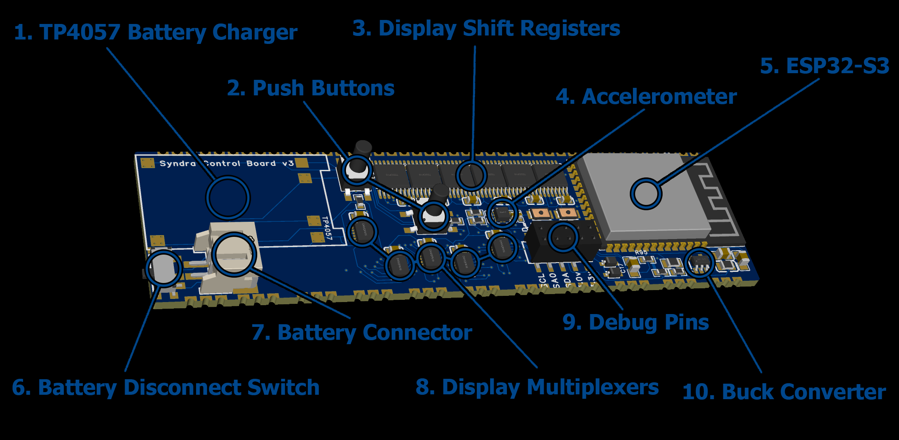
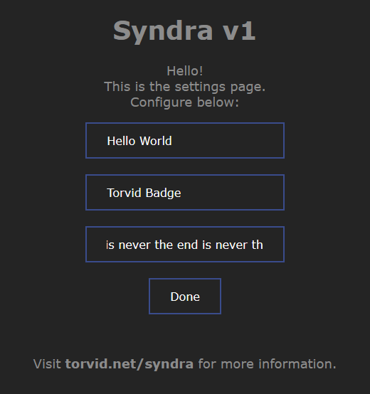

Syndra LED Badge Version 1

Syndra was year-long project to learn Electronics and re-create "from scratch" one of those Text-Dispaly badges but with RGB LEDs.
Thanks To:
Maple <3
Ferix
Tom The Dragon
Operation
How do I change program?
Press one of the two buttons on the back.
How do I change the text?
1. Hold down one of the two buttons, An animation will play.
2. After a couple seconds, the badge will generate a wifi network. Connect to it with your phone or other device.
3. A settings menu will appear, change settings here and click "Done".
How do I change the text color?
Press one of the two buttons on the back.
NOTE: The power switch needs to be in the ON state ("on" marked on the badge) for the battery to charge.
Specs

Hardware
1. Classic TP4057 "Add-On" board that provides battery charging capabilities and extra battery protection.2. Push buttons for operating the badge. (TS-1109S)
3. Shift Registers used for controlling the "row data" as it scans the display. (74HC595)
4. Accelerometer used for fun effets like sloshing water and pacman maze game. (LIS2DW12)
5. The "brains" of the device, enalbing WiFi, flash memory, bitbanging display control and really fast compute! (ESP32-S3)
6. Battery Disconnect switch, litterally just disconnects the internal battery so it can be stored without slowly draining. (SK-3296S)
7. Internal Battery connector, for easily replacing the battery once it dies. (S2B-PH-SM4-TB)
8. Display multiplexers, for setting the "active row". (74HC138)
9. Debug pins, this part is desoldered and removed after the device is flashed to save space.
10. Buck Converter, changes battery and USB power to a stable 3.3v for the microcontroller and LEDs. (M3406-ADJ)
Software
I ported the LED-Badge program to WASM, if you are lucky it should be running above! Use your mouse to simulate AcceloerometerCode vibes
All the code was written in C/C++ with absolutely minimal dependencies (no libc, all dependencies wrapped or implemented from scratch.), so getting the code working on Windows, the ESP32, and WASM was all relatively easy.
WiFi text editing
 The main function of the badge is to display scrolling text. There are three "slots" you can put text into. Changing text is done by having the ESP32 generate a WiFi Access Point. When you connect to this WiFi network, the Captive Portal "login" page acts as makeshift settings page. This means I didn't need to write a bluetooth app. When the "done" request is recieved from the login page, the chosen text is written to the built-in flash memory and the badge restarts itself.
Display Control
The Multiplexers and Shift-registers mentioned above are controlled by setting GPIO-pin values manually in software. Scanning the display row-by-row fast enough that you can't tell it's blinking. The multicore capabillities of the S3 helped a bunch with speed here. Pinning one core to be the "display blinker" basically xD
Input
The accelorometer and button state is sampled at the start of every frame, so no de-bouncing is needed.
Text Rendering
The text is a simple raster font with anti-alasing to make the scrolling more smooth.
Water particles
This was an idea I had for several years, finally coming to life in the badge. I had seen lots of little "sand sim in LED panel" things before, but they were all kind of slow, unresponsive and overall bad vibe. With a processor as fast as the ESP32 it was pretty easy to get it nice and snappy.
The particles change color based on speed. The actual physics is a simple verlet solver, naive N^2 collision checks. With some more time for optimization I could probably have doubled the particle count.
Pacman maze
I had never written a maze generator before so I spent a whole evening fighting to get it working. Originally it was going to be like super monkeyball in 2D but Maple suggested I make it feel and look like one of those toy "ball in maze" puzzles, which worked out beautifully. At some point I had the idea to add pacman dots instead of having an "end goal". Eating the little dots felt Significantly more satisfying than just getting to the end. The collision and physics code was copy/pasted from the water simulation.
Battery indicator
Simple text readout of the battery voltage so you know if you should charge it soon. I had the idea quite late, so the needed voltage divider was bodged-in last-minute. The software side is basically just a matter of reading an ADC pin and multiplying the value by two.
Visualizer
This program was copied almost entirely from a previous project. It simulates the effect of pointing a camera at a monitor displaying the camera output, like a feedback loop that accumulates and smears and blurs. The end result is some pretty colors. Doesn't show up super well on the physical badge, not enough juice to drive the LEDs.
How did this all happen?
At NFC 2023 I got to talking with TomTheDragon, who had a fun LED badge with scrolling text. We got to talking about how there's no RGB ones, considering how hard it might be to build one from scratch.
Sooooooo I decided to go ahead and try it, almost on a dare, hoping that the idea of doing something impossible would keep me motivated.
Since I knew next to nothing about electronics, I started harassing Maple (who is a product engineer) with a million questions about electronics, PCBs (Printed Circut Boards) design, power circutry, LEDs, Microcontrollers. And with way, waaaaay more confidence than warranted I just kind of went for it. A common pattern here became Maple explaining something, me drawing some conclusions and going for it immediately without asking further questions or listening to his warnings.
Uuuhhh
At first I was planning on powering it with two AA batteries. I designed a test board with a bunch of different possible configurations of power, LEDs and LED control circutry.
Waste of time
Only once I had received the board from JLCPCB did I think to actually build a physical model to see how the final badge might feel. I reazlied immediately that with AA batteries it would be way too heavy and awkward; not at all like the thin small badge Tom had at NFC. So I drastically changed plan to instead use LiPo batteries (because they are smaller) and to go for USB charging. At least I learned a bunch of stuff about PCB design.

Touching grass
With this setback, I took a hiatus from the project to go think about life for a bit. ._.
Panic
Realizing next NFC was drawing closer and closer, with the goal of having the project done before then, I got to work again. I made a couple 3D-print experiments for the the badge.I then started figuring out a new and improved general design of the board, splitting it into two separate PCBs: one with the display on it, and one with the microcontroller, power, etc on it. This also meant I could test them separately. I found a nice breakout board that I could use for charging the battery.


Woah something is working
At this point, Maple introdced me to Ferix, (electrical engineer) who could help answer questions more in-depth. I started prototyping on a breadboard, using some multiplexers, shift registers and an ESP32 devboard. After some tinkering I found this worked really well! I decided to go ahead with this general design.Smells like burning flux
I designed and ordered a dispaly board, placing pads around the edges for connecting it to the breadboard. It turns out I made the pads way too small, so soldering them was a bit of a pain. But with some effort, I managed to get it connected to the breadboard and powered up.
First light
I started harassing Ferix for real, especially about power, and he gave me the advice to pick whatever power converter is the most popular, and walked me through configuring it! I put all of this power circuitry on a small board and ordered it, just to make sure it would actually work. Luckily it did! I also put an accelorometer on this board to play with.

Let's fucking go
At this point I started designing the control board, taking everything on the breadboard and "minifying" it to fit on the final PCB. I had to make the PCB bigger than originally intended to easily fit all the components. With some anxiety, I ordered the board an put it together. After some fiddling and accidentaly shorting random stuff, it worked! I also started working on the software "for real" at this point, making a fun physics toy, scrolling text and a settings page.
So cool
Happy the control board seemed to be working, I ordered the final verison of the LED array, soldered it to the other PCB and tested it to make sure it was all still working. I needed to add a bodge-capacitor and a couple extra wires to get it all working right and I broke one of the switches. But there was (luckily) no unfixable failure.


Productizing
Pretty soon, and with the deadline looming I finished up the software, and 3D-printed a case for it. I plan on giving one to Tom and one to Maple next NFC. Hopefully they like it :)
Closing thoughts
Right after finishing the project, I had a thousand ideas swirling in my head for what I could have done better, making vague plans for a "version 2"Hardware:
- The LEDs don't light up properly, especially the blue ones seem to need a lot more juice.
- The whole power system is cursed. To turn the badge on, you often have to turn it on, turn it off, then turn it on again. I have absolutely no idea why. The power converted at idle draws 20mA for seemingly no reason, wasting almost an hour of battery life.
- The buttons go out the back, which makes it horrible to operate; having buttons going up or down would have been much better.
- There's no proper low-voltage cutoff other than the 2.5v one that's there just for safety reasons.
- I didn't leave enough space for the battery and did the castellation wrong, so the badge is like 2x thicker than it could have been.
- printing the case out of transparent plastic so you can see the guts inside would be really cool.
- Right now a bunch of Bit-Bang time is wasted on the strange resolution of the badge, if I picked a resolution and aspect ratio that better fits the hardware would help a lot, like 10x34 pixels instead of 11x44.
- The choice of power switch was horrible. I should have used something much more meaty. I'd also want to change it from a "battery disconnect switch" to a more normal power switch turns stuff off properly.
- The battery charger circut looked really scary at the start, but now I feel confident I could make one myself without relying on the add-in board.
- The external USB port is only used for power, but it could totally be used for programming as well.
Software:
- An idea I had but never got to is making the text explode into particles.
- The only thing you can change about the text in this version is the text itself. How it scrolls, like speed is hard-coded.
- I wanted to allow for more customization, like uploading images, maybe even gifs and full on video files. the ESP is easily fast enough for it.
- Someone suggested writing a "hourglass" timer using the physics sand, which I immedietly fell in love with.
THAT'S ALL. HHHHH.